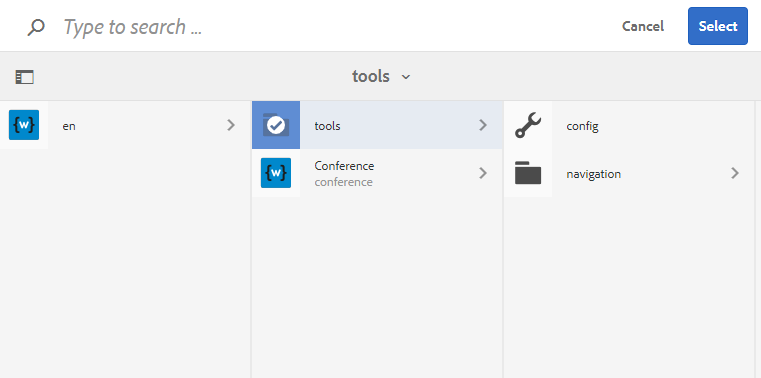

wcm.io
wcm.ioGranite UI components
Checkbox
Form checkbox for boolean data.
"field": {
"sling:resourceType": "wcm-io/wcm/ui/granite/components/form/checkbox",
"name": "./field",
"fieldDescription": "Description for checkbox",
"text": "Check this"
}
Enhancements over AEM version:
- Store with correct Boolean datatype via explicit @TypeHint
- Writes ‘true’ when checked
Number Field
Number field for long value.
"field": {
"sling:resourceType": "wcm-io/wcm/ui/granite/components/form/numberfield",
"name": "./field",
"fieldLabel": "Number"
}
Enhancements over AEM version:
- Store with correct Long datatype via explicit @TypeHint
Date Picker
Form field for date/time value.
"field": {
"sling:resourceType": "wcm-io/wcm/ui/granite/components/form/datepicker",
"displayedFormat": "DD.MM.YYYY HH:mm",
"name": "./field",
"type": "datetime",
"fieldLabel": "Date"
}
Enhancements over AEM version:
- Store with correct Date datatype via explicit @TypeHint
Select
Select form field.
"field": {
"sling:resourceType": "wcm-io/wcm/ui/granite/components/form/select",
"name": "./field",
"multiple": true,
"fieldLabel": "Select"
}
Enhancements over AEM version:
- Always stores values as array if “multiple” mode is activated, regardless how many entries are selected.
Path Field

A field that allows the user to enter path. This path field can be used for both picking page paths or asset paths.
"field": {
"sling:resourceType": "wcm-io/wcm/ui/granite/components/form/pathfield",
"name": "./field",
"rootPath": "/content"
}
Enhancements over AEM version:
- Keep repository order for orderable parent nodes (e.g. pages)
- Always display root path in an extra column, so it can be selected as well
- Path field always displays only the subtree of the configured root path, regardless if the given path value has a path outside the root path
- Limit search result to pages and assets
- Hides certain “AEM-internal” content paths which should not be shown when picking pages or assets
- Provide
appendPathparameter that allows to add an additional sub path to the configured root path - Supports any resource-based predicates as
filter(and not onlyfolder,hierarchy,hierarchyNotFile,nosystem) - Automatically applies a
nodeTypesfilter when none is configured (cq:Page or dam:Asset, depending on root path)
Config-Scope Path Browser (deprecated)
This is a customized Path Field/Browser that always sets the root path to the inner-most configuration scope root. If you want to show only pages of the current site, consider using the Site Root Path Picker from wcm.io URL Handler Granite UI components.
Requires proper configuration of Apache Sling Context-Aware configuration, see also wcm.io Context-Aware Configuration.
"field": {
"sling:resourceType": "wcm-io/wcm/ui/granite/components/form/configScopePathBrowser",
"name": "./field",
"fieldLabel": "Internal Page"
}
Enhancements over AEM version:
- Dynamically sets the
rootPathto the configuration scope root. - Optional config parameter
appendPath: provides a relative path (starting with “/”) which is appended to the detected root path